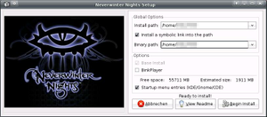
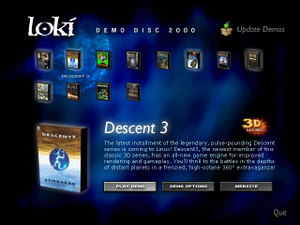
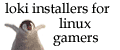

Loki Installer
Dieser Artikel wurde für die folgenden Ubuntu-Versionen getestet:
Dieser Artikel ist größtenteils für alle Ubuntu-Versionen gültig.
Zum Verständnis dieses Artikels sind folgende Seiten hilfreich:
Der Loki Installer wurde von der Firma Loki Software  entwickelt, um Spiele unter Linux distributionsunabhängig installieren zu können. Die Installation erinnert dabei an .exe-Setups unter Windows. Es handelt sich nicht um ein eigenständiges Programm, sondern um ein Skript, das für jedes Spiel extra geschrieben werden muss. Aufgrund ihrer Distributionsunabhängigkeit werden Loki Installer inzwischen nicht nur für Spiele entwickelt, sondern auch für Closed-Source-Programme wie beispielsweise Google Earth.
entwickelt, um Spiele unter Linux distributionsunabhängig installieren zu können. Die Installation erinnert dabei an .exe-Setups unter Windows. Es handelt sich nicht um ein eigenständiges Programm, sondern um ein Skript, das für jedes Spiel extra geschrieben werden muss. Aufgrund ihrer Distributionsunabhängigkeit werden Loki Installer inzwischen nicht nur für Spiele entwickelt, sondern auch für Closed-Source-Programme wie beispielsweise Google Earth.
Da Loki Installer inzwischen etwas in die Jahre gekommen sind, entstand das neue Projekt MojoSetup , durch das sie in Zukunft abgelöst werden sollen.
|  |
| © BioWare Corp. |
Installation¶
Man lädt sich das Skript zu dem jeweiligen Spiel herunter und muss ggf. noch die Ausführrechte nach dem Download setzen [2] [6]:
chmod +x Loki_Installer
Mit Loki_Installer ist der Dateiname des Loki Installers gemeint, den man sich heruntergeladen hat.
Danach hat man die Möglichkeit dies im Homeverzeichnis oder Systemweit zu installieren:
Installation als Benutzer¶
Für die Installation als Benutzer führt man das Skript per Doppelklick in einem Dateimanager aus oder im Terminal [2] mit:
./Loki_Installer
Danach folgt man den Anweisungen auf dem Schirm. Für die Verknüpfung gibt man ~/bin an um das Programm komfortabel starten zu können. Das Programm wird standardmäßig ins Homeverzeichnis installiert. Nach der Installation kann das Programm über den entsprechenden Eintrag im Menü, über die Verknüpfung im Verzeichnis des Spiels oder durch Eingabe des Dateinamens der Verknüpfung gestartet werden [5].
Der Nachteil dieser Methode ist, dass andere Benutzer auf dem PC das Spiel nicht starten können - ohne dass man das Sicherheitskonzept von Linux arg verbiegt.
Sollte die Installation nicht starten gibt es Lösungsansätze unter Problemlösungen.
Installation als Root¶
Um das Spiel als root zu installieren, öffnet man ein Terminal [1] und gibt dort
sudo sh Loki_Installer
ein. Spiele werden standardmäßig in /usr/games, Closed-Source-Programme in /opt installiert. Die Ordnerkönnen anpasst werden. Optional kann zusätzlich eine Verknüpfung nach /usr/bin gesetzt werden, damit jeder Benutzer das Spiel starten kann. Nach der Installation kann das Programm mit entsprechenden Befehl, auf den zum Schluss vom Loki_Installer hingewiesen wird, gestartet werden [5].
Sollte die Installation nicht starten gibt es Lösungsansätze unter Problemlösungen.
Achtung!
Bei einer Root-Installation sollten man keine Programme in den Persönlicher Ordner installieren und gleichzeitig eine Verknüpfung nach /usr/local/bin erstellen lassen, weil sonst die Sicherheit des Systems gefährdet wird! Außerdem sollte nach Abschluss der Installation das Programm nicht direkt aus dem Installer heraus gestartet werden, da sonst evtl. benötigte versteckte Verzeichnisse im Persönlichem Ordner mit falschen Berechtigungen erstellt werden könnten.
|  |
| Demos |
Demos¶
Zur Installation von Demos zuerst von lokigames.com  das Grundprogramm loki-demos-1.0d.run herunterladen und die Ausführrechte [6] setzen. Anschließend dieses aufspielen [2] - z.B. nach ~/Spiele/Loki-Demos:
das Grundprogramm loki-demos-1.0d.run herunterladen und die Ausführrechte [6] setzen. Anschließend dieses aufspielen [2] - z.B. nach ~/Spiele/Loki-Demos:
_POSIX2_VERSION=199209 sh loki-demos-1.0d.run
Anschließend das gewünschte Demo / die gewünschten Demos von o.g. Seite herunterladen und wie das Grundprogramm installieren. Nun kann das Hauptprogramm mit loki_demos gestartet [5] werden. Auf Wunsch einen Menüeintrag vornehmen. Die Demos werden unter ~/Spiele/Loki-Demos/demos abgespeichert.
Hinweis:
Nicht jede Demoversion kann installiert werden.
Deinstallation¶
Automatische Deinstallation¶
Die automatische Deinstallation ist nicht fehlerfrei. Zum einen werden einige Programme nicht mit aufgelistet, obwohl sie per Loki_Installer installiert wurden, zum anderen wird die Deinstallation hiermit nicht immer vollständig durchgeführt. Es kann vorkommen, dass das Stammverzeichnis des Programms nicht komplett gelöscht wird und in jedem Fall bleibt der versteckte Ordner im Homeverzeichnis erhalten, wenn vorhanden. Bei Problemen oder wenn eine vollständige Deinstallation gewünscht ist, sollte man die manuelle Deinstallation durchführen.
Deinstallation als Root¶
Programme, die man als Root installiert hat, können mit dem Befehl
sudo /root/.loki/installed/bin/Linux/x86/uninstall <Name des Programms>
deinstalliert werden [1]. Eine Liste der derzeit installierten Programme erhält man mit [1]
sudo /root/.loki/installed/bin/Linux/x86/uninstall -l
Manuelle Deinstallation¶
Für eine vollständige, manuelle Installation muss zunächst das Stammverzeichnis des Programms gelöscht werden [2]:
rm -R /Ordner/des/Programms
Bei einer Root-Installation muss dieser Befehl natürlich mit Root-Rechten durchgeführt werden. Standardmäßig befinden sich die installierten Spiele bei einer solchen in /usr/local/games, sonstige Programme in /opt. Bei einer Benutzer-Installation wird standardmäßig alles im Homeverzeichnis installiert. Wenn man die Einstellungen und evtl. die Speichergänge nicht behalten will, sollte der jeweilige versteckte Ordner, z.B. ~/.northland, im Homeverzeichnis gelöscht werden. Im Ordner ~/.loki sind die Spiele ebenfalls zu finden. Dieser wird aber nicht immer angelegt.
Wenn vorhanden, muss als nächstes das Startskript gelöscht werden. Bei der Root-Installation befindet sich in dieses in /usr/local/bin [2]:
sudo rm /usr/local/bin/Programm
Mitunter aber auch unter /usr/local/sbin. Bei einer Benutzer-Installation kann hingegen die Datei im Persönlichem Ordner im Ordner ~/bin gelöscht werden, wenn vorhanden.
Als letztes müssen noch evtl. vorhandene Menüeinträge [4] oder sonstige Verknüpfungen gelöscht werden.
Problemlösungen¶
64-bit-Betriebssystem¶
Auf einer 64-bit-Installation muss jedem einzelnen Befehl linux32 vorangestellt werden, weil sonst eine Fehlermeldung wie
This installation doesn't support unknown on Linux / x86_64
erscheint. Der Aufruf des Demo-Installers wäre dann beispielsweise:
linux32 ./loki-demos-1.0d.run
POSIX2¶
Portable_Operating_System_Interface ist eine Schnittstelle zwischen Anwendung und dem Betriebssystem. Programme aus den coreutils z.B. tail und chown nutzen den neuen POSIX-Standard von 2001. Beim Start einer alten Installationsroutin kann z.B. folgende Fehlermeldun erscheinen:
Verifying archive integrity...tail: „+6“ kann nicht zum Lesen geöffnet werden: No such file or directory Error in check sums 3279358048 2069455402
Einige ältere Routinen bauen auf dem Standard von 1992 auf. Um diese nutzen zu können kann man mit einer Umgebungsvariablen den alten Standard erzwingen [1]:
_POSIX2_VERSION=199209
Der neue Wert ist 200112 und wird als Vorgabe für _POSIX2_VERSION angenommen.
Gegenüberstellung¶
| Gegenüberstellung | |
| POSIX 1992 | POSIX 2001 |
| chown tux.users | chown tux:users |
| tail +3 | tail -n +3 |
| head -1 | head -n 1 |
| sort +3 | sort -k +3 |
| nice -10 | nice -n 10 |
| split -10 | split -l 10 |
Fehlermeldungen¶
Einige Loki Installer, z. B. bei Ankh, müssen mit vorangestelltem /bin/bash gestartet werden:
/bin/bash ./Loki_Installer
Programm startet nicht¶
Beim Starten des Programms bekommt man folgende Fehlermeldung:
Syntax error: Bad substitution
Dieses Problem tritt vor allem bei älteren Loki Installern auf, beispielsweise bei Quake 2 .
1. Lösung: Verknüpfungen anpassen bzw. neu erstellen¶
Zum einen können einfach vorhandene Menüeinträge [4] oder sonstige Verknüpfungen angepasst werden, indem nicht mehr auf das vom Loki Installer erstellte Startskript, sondern direkt auf die ausführbare Datei verlinkt wird. Wenn man sich unsicher ist, welche Datei das ist, kann bei einer Benutzer-Installation das Startskript mit einem Editor [3] geöffnet werden. Relativ weit oben befindet sich dann folgende Zeile (hier wurde als Beispiel Quake 2 gewählt):
GAME_BINARY="sdlquake2"
Die Datei sdlquake2 im Verzeichnis des Spiels ist in diesem Beispiel also die ausführbare Datei, auf die verlinkt werden muss. Bei einer Root-Installation stellt man selbiges mit folgendem Befehl fest [2]:
ls -l /usr/local/bin/Programm
Mit Programm ist der Befehl gemeint, mit dem man das Programm startet. Die Ausgabe sieht dann beispielsweise bei dem Spiel Cube bei einer Standardinstallation als Root so aus:
lrwxrwxrwx 1 root root 26 2007-09-29 21:13 /usr/local/bin/cube -> /usr/local/games/cube/cube
Die Angabe hinter dem Pfeil ist die Datei, auf die vom Skript zugegriffen wird, also die Datei cube im Ordner /usr/local/games/cube.
Möchte man das Spiel komfortabel mit Alt + F2 starten, muss man ein neues Startskript erstellen:
2. Lösung: Neues Startskript erstellen¶
Hier startet man das Spiel über ein selbst erstelltes Startskript und nicht über das vom Loki Installer erstelltem. Dazu öffnet man einen Editor [3] mit folgendem Inhalt:
#!/bin/bash cd /Pfad/zum/Programm/ ./Datei $*
Dabei muss /Pfad/zum/Programm/ und Datei natürlich angepasst werden. Für das Beispiel mit Cube sähe das selbsterstellte Skript also so aus:
#!/bin/bash cd /usr/local/games/cube/ ./cube $*
Das Skript muss nun ausführbar gemacht werden [6]. Anschließend kann das Programm über die neu angelegte Datei gestartet werden [5]. Bei einer Root-Installation empfiehlt sich zudem, diese nach /usr/local/bin/ zu verschieben [2], damit alle Benutzer des System darauf zugreifen können. Bei Benutzer-Installationen kann sie hingegen in den Ordner ~bin verschoben werden. Vorhandene Menüeinträge [4] und Verknüpfungen müssen ggf. angepasst werden.
Menüeintrag nicht vorhanden¶
Bei einigen Loki Installern taucht nach der Installation nicht der gewünschte Menüeintrag auf. Hier muss man selbst entsprechende Einträge anlegen [4].
Installation bei mehreren CDs¶
Hier empfiehlt sich die Anleitung zur Installation von mehreren CDs zu benutzen.
Wenn ein Spiel die CD nicht findet, kann man mit dem Befehl
export SETUP_CDROM=/media/cdrom/
den Pfad zum CD/DVD-ROM-Laufwerk angeben [2].

Links¶
liflg.org
- Offizielle Installer icculus.org
- Alternative Installer

Patches, Demos, Updates und Installer¶
descent3@lokigames.com
- für weitere Spiele descent3durch den Titel ersetzen (z.B.http://updates.lokigames.com/myth2/)
- Erstellt mit Inyoka
-
 2004 – 2017 ubuntuusers.de • Einige Rechte vorbehalten
2004 – 2017 ubuntuusers.de • Einige Rechte vorbehalten
Lizenz • Kontakt • Datenschutz • Impressum • Serverstatus -
Serverhousing gespendet von